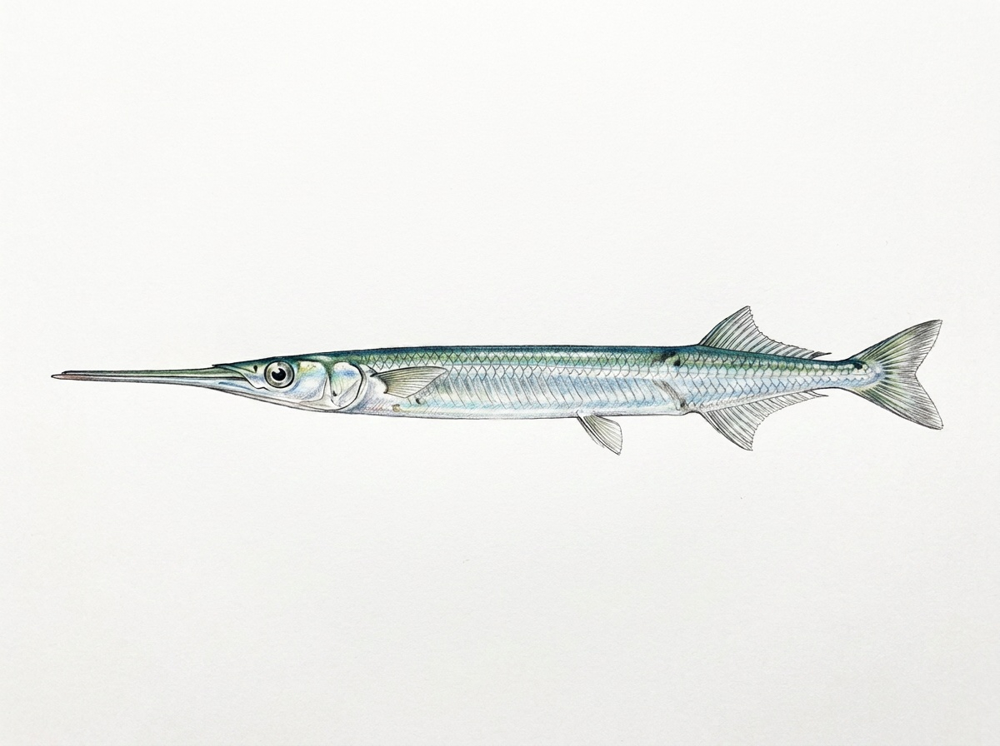

Freshwater Needlefish
Xenentodon cancila
Family: Belonidae
The Freshwater Needlefish is a long, slender freshwater fish native to Sri Lanka and other parts of South Asia. In Sri Lanka, it is found in rivers, streams, reservoirs, lakes, and calm freshwater habitats with clear water and aquatic vegetation. It usually stays near the surface among plants and submerged structures, where its elongated body provides excellent camouflage. This species is a specialized surface predator with a long, pointed jaw filled with sharp teeth. It is an ambush hunter that remains motionless before rapidly striking small prey. Its diet mainly consists of small fish, aquatic insects, insect larvae, and tiny crustaceans. It is generally solitary or found in small groups. The Freshwater Needlefish is an interesting native predator in Sri Lanka’s freshwater ecosystems, helping regulate populations of smaller aquatic animals. Its survival depends on maintaining clean freshwater habitats with natural vegetation and suitable water conditions.